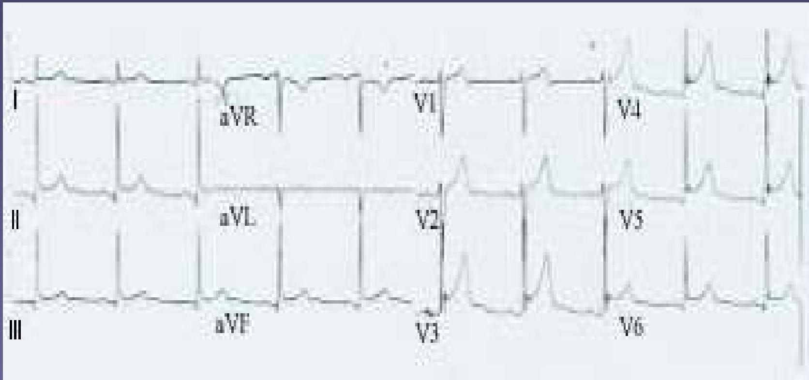
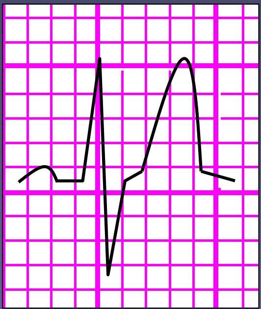

〰️
Topic 08
ST, T Wave & QT
01
The ST Segment
- The ST segment should sit on the isoelectric line
- It is abnormal if there is planar (i.e. flat) elevation or depression of the ST segment
Planar Abnormalities
- Planar ST elevation can represent an MI or Prinzmetal's (vasospastic) angina
- Planar ST depression can represent ischaemia
Pericarditis
- If the ST segment is elevated but slanted, it may not be significant
- If there are raised ST segments in most of the leads, it may indicate pericarditis – especially if the ST segments are saddle shaped.
- There can also be PR segment depression

02
The T Wave
Are the T waves too tall? No definite rule for height.
T wave generally shouldn't be taller than half the size of the preceding QRS.
Tall T Wave Causes
- Hyperkalaemia
- Acute myocardial infarction

- If the T wave is flat, it may indicate hypokalaemia
- If the T wave is inverted it may indicate ischaemia
03
The QT Interval
- The QT interval is measured from the start of the QRS complex to the end of the T wave.
- The QT interval varies with heart rate
- As the heart rate gets faster, the QT interval gets shorter
It is possible to correct the QT interval with respect to rate by using the following formula:
QTc = \frac{QT}{\sqrt{RR}}
(QTc = corrected QT)
Clinical Significance
- The normal range for QTc is 0.38-0.42
- A short QTc may indicate hypercalcaemia
- A long QTc has many causes and increases the risk of developing an arrhythmia
04
The U Wave
- U waves occur after the T wave and are often difficult to see
- They are thought to be due to repolarisation of the atrial septum
- Prominent U waves can be a sign of hypokalaemia, hyperthyroidism
Knowledge Check
Test Your Understanding
Assess your ability to identify ST, T wave, and QT abnormalities.
Loading quiz...